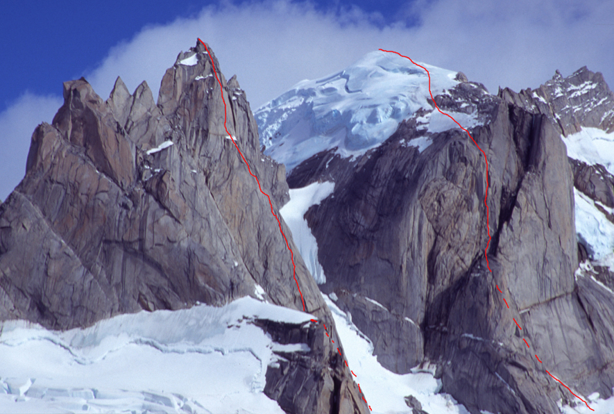

Alpine climbing
Coiling Rope
 Jia Condon coiling rope on the summit ridge of Mt. Tiedeman, Waddington Range B.C., after making the first free ascent of the Direct South Buttress at 5.11-. It took us 39 hours camp to camp and we only stopped for a 4 hour break to brew water, and wait for an iso-thermic snowfield to re-freeze before crossing it.
Jia Condon coiling rope on the summit ridge of Mt. Tiedeman, Waddington Range B.C., after making the first free ascent of the Direct South Buttress at 5.11-. It took us 39 hours camp to camp and we only stopped for a 4 hour break to brew water, and wait for an iso-thermic snowfield to re-freeze before crossing it.
Patagonia 2005: New routes on Fitz Roy, Descmochada, and Rafael
Argentine Patagonia summary from January and February 2005 Fitz Roy and Aguja Rafael, New Routes. Paul McSorley and I rolled in to Patagonia at the end of January, just in time for the start of three weeks of mostly excellent climbing weather. We immediately hiked to Paso Superior with the intentions of finding an unclimbed line on the south or east face of Fitz Roy. After seven sweet early-morning pitches up La Brecha, we saw an obvious line of beautiful clean corners splitting the south face, just left of the Boris Simoncic Route (ED-: 5.9 A2 55°, 650m,
Cuatro Dedos and Domo Blanco, Torre Glacier, Patagonia
Jan 13th - Cuatro Dedos(Four Fingers): The window was only supposed to be a small one so we set our goal on a smaller tower by Torre Glacier standards, called Cuatro Dedos. To get there required walking past about ten or more other beautiful towers, which was probably one of the main reasons why it had only ever seen one or two ascents. A prominent northeasterly buttress that led directly to its summit had been on my list of things to do for a couple years, and it was finally time to attempt it.